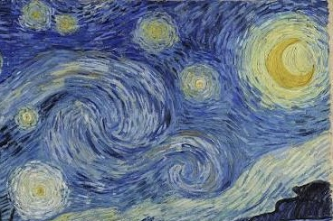
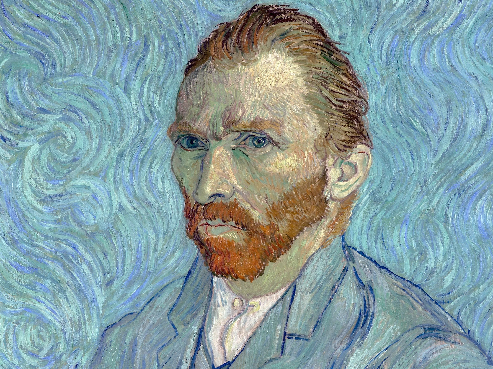

Studio Monografico
Saint-Rémy-de-Provence, 1889
La "Notte Stellata" non rappresenta semplicemente un paesaggio notturno; essa costituisce il testamento visivo di una mente che percepisce la realtà come un flusso incessante di energia. Dipinta durante il ricovero di Vincent van Gogh presso l'istituto di Saint-Paul-de-Mausole, l'opera trascende l'impressionismo per approdare a un espressionismo simbolico senza precedenti.
Al centro della composizione domina un immenso vortice celeste. Ciò che un tempo veniva interpretato solo come un segno di instabilità mentale, oggi è oggetto di studi fisici: Van Gogh è riuscito a rappresentare la turbolenza dei fluidi, uno dei concetti più complessi della meccanica classica, decenni prima che venisse formulato matematicamente.

L'imponente figura oscura in primo piano funge da axis mundi, un ponte verticale che connette il piano terrestre (il villaggio) con quello celeste (l'infinito). La sua forma fiammeggiante evoca la tensione spirituale dell'artista verso l'assoluto.
In netto contrasto con il tumulto del cielo, il villaggio è reso con linee rette e pacate. Questo borgo, ispirato ai ricordi dell'infanzia olandese, rappresenta l'ordine umano e la stabilità che Vincent sentiva ormai perduti.

Nell'autoritratto del medesimo periodo, osserviamo la medesima tecnica esecutiva: pennellate brevi, ritmiche e ondulate che sembrano far vibrare la materia stessa. Non vi è distinzione tra l'uomo e il cosmo; entrambi sono fatti della stessa sostanza vibrante e tormentata.
L'uso dei colori complementari (il blu oltremare e il giallo cromo) non è casuale. Van Gogh sfrutta il contrasto simultaneo per generare una luminosità che sembra emanare dalla tela stessa. Le undici stelle, cariche di impasto, fungono da sorgenti luminose indipendenti che frammentano l'oscurità notturna.